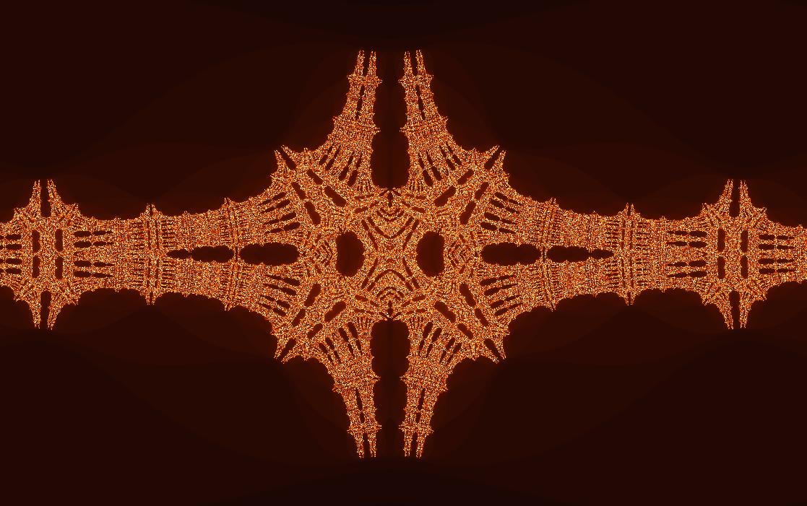
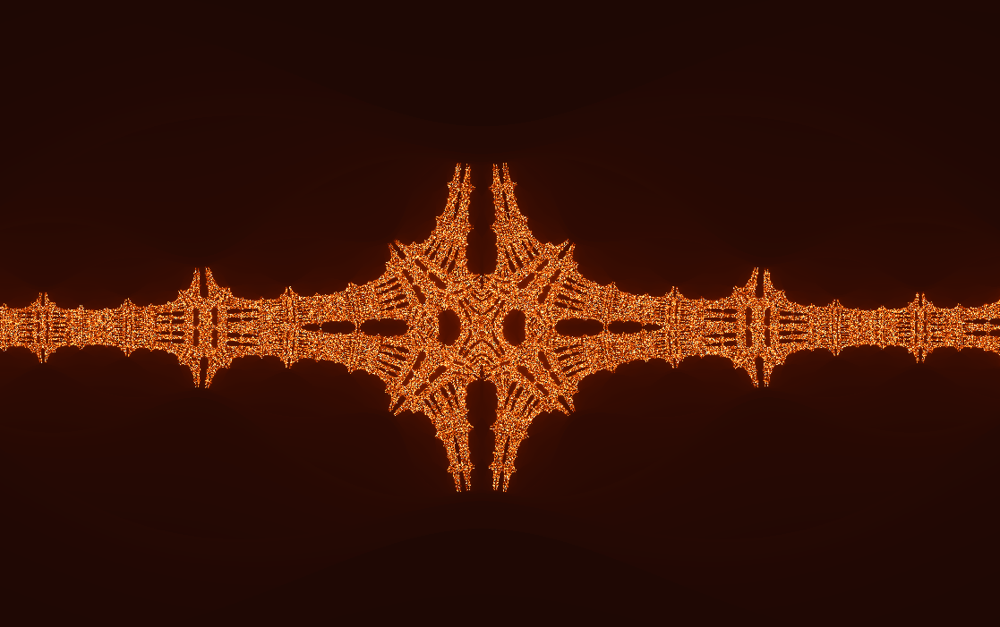
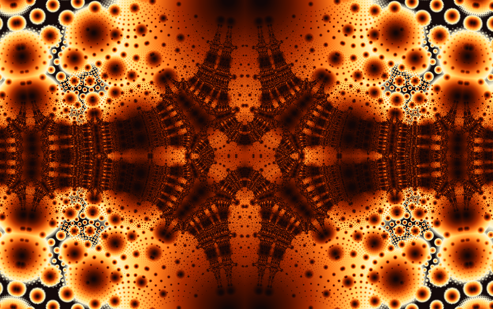
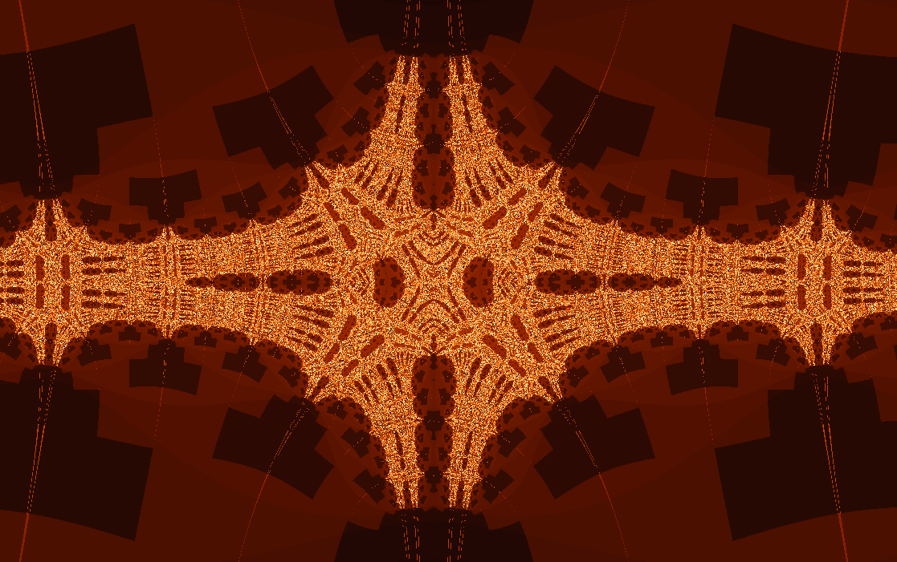
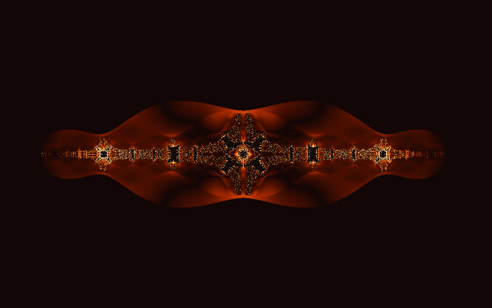
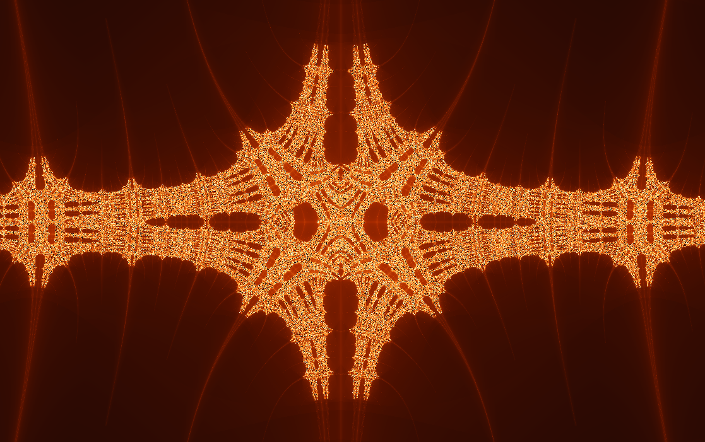

Dynamical plane
Burning Ship Julia
The folded orbit rule, now seen from inside one chosen parameter.
Instead of letting each pixel choose a parameter, this view fixes the parameter \(k\). Every pixel becomes a starting point, so you can inspect the local universe generated by one Burning Ship coordinate.

What to try first
Open the Burning Ship parameter set and toggle Julia mode. Move the selector from the dark body toward the exterior and watch the Julia view fracture.
Try a point near a narrow boundary. Tiny parameter changes can turn broad connected forms into dust-like islands.
Use orbit display to compare a starting point that remains calm with one that escapes immediately.
Mathematical notes
Parameter space versus dynamical space
For the Burning Ship Julia view, wxChaos fixes a complex parameter \(k\) and iterates \(z_{n+1}=(|\operatorname{Re}(z_n)|+i|\operatorname{Im}(z_n)|)^2+k\). The pixel supplies \(z_0\). This is the same rule as the Burning Ship, but the roles of the image point and the formula parameter have changed.
Coloring lenses
The set stays the same, but each rendering method asks a different question about the orbit.


Gaussian integer
Measures how closely escaping orbits pass near the complex integer lattice.
Apply in wxChaos

Triangle inequality
Turns relationships inside the orbit into layered, topographic texture.
Apply in wxChaos
Orbit traps
Colors points by how closely their orbits pass near a chosen trap shape.
Apply in wxChaos